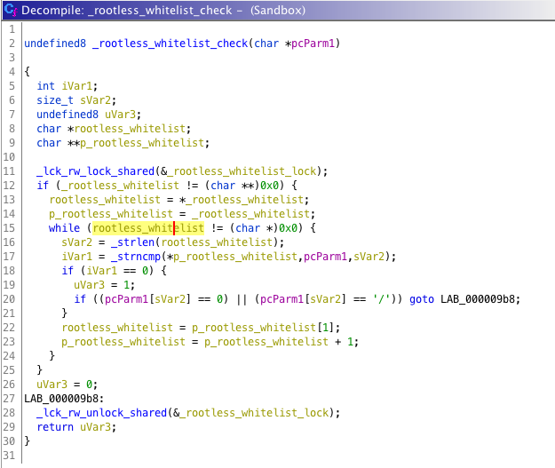

Vault7: CIA Hacking Tools Revealed
Navigation: » Directory » Mac » Mac Development
Write to protected directories by using filenames in rootless_whitelist
These are the files in the rootless_whitelist for 10.11.2.
rootless_whitelist_10.11.2.txt
Method to find this list
This whitelist is checked when trying to write a file to a protected directory. If the filename matches one in the whitelist file creation is allowed (with whatever privileges are required.....usually root). See the function _rootless_whitelist_check in Sandbox.kext.

In a kernel debugger I ran the following:
breakpoint set -n rootless_whitelist_check
Then tried a file write on the target OS
sudo touch /System/Library/SystemConfiguration/test
debugger broke on the rootless_whitelist_check function
* thread #1: tid = 0x0001, 0xffffff7fafaac947 Sandbox`rootless_whitelist_check, stop reason = breakpoint 7.1
frame #0: 0xffffff7fafaac947 Sandbox`rootless_whitelist_check
Sandbox`rootless_whitelist_check:
-> 0xffffff7fafaac947 <+0>: int3
0xffffff7fafaac948 <+1>: movq %rsp, %rbp
0xffffff7fafaac94b <+4>: pushq %r15
0xffffff7fafaac94d <+6>: pushq %r14
typed next until I got to the following
* thread #1: tid = 0x0001, 0xffffff7fafaac980 Sandbox`rootless_whitelist_check + 57, stop reason = instruction step over
frame #0: 0xffffff7fafaac980 Sandbox`rootless_whitelist_check + 57
Sandbox`rootless_whitelist_check:
-> 0xffffff7fafaac980 <+57>: movq -0x8(%rbx), %rdi
0xffffff7fafaac984 <+61>: movq %r14, %rsi
0xffffff7fafaac987 <+64>: movq %r15, %rdx
0xffffff7fafaac98a <+67>: callq 0xffffff802ec94a20 ; strncmp at subrs.c:198
Value for the rootless_whitelist char** is in rbx
(lldb) register read
General Purpose Registers:
rax = 0x00000000fffffff0
rbx = 0xffffff803984b040
rcx = 0xffffff803abe87f1
rdx = 0x0000000000000043
rdi = 0xffffff8098f1f03b
rsi = 0xffffff803abe87e0
rbp = 0xffffff9246d4b1d0
rsp = 0xffffff9246d4b1b0
r8 = 0x0000000000000189
r9 = 0x0000000000000000
r10 = 0xffffff80292a77b0 kernel.debug`zone_locks_grp
r11 = 0x0000000000000000
r12 = 0x0000000000000000
r13 = 0xffffff803f06f110
r14 = 0xffffff803abe87e0
r15 = 0x000000000000001a
rip = 0xffffff7fa96ac9b0 Sandbox`rootless_whitelist_check + 105
rflags = 0x0000000000000392
cs = 0x0000000000000008
fs = 0x0000000000000000
gs = 0x0000000000010000
print out all the values in the char**
(lldb) p *(char* (*)[168])$rbx
(char *[168]) $1366 = {
[0] = 0xffffff8098f1f09c "/System/Library/CoreServices/CoreTypes.bundle/Contents/Library/iLifeSlideshowTypes.bundle"
[1] = 0xffffff8098f1f0f6 "/System/Library/CoreServices/SecurityAgentPlugins/CentrifyPAM.bundle"
[2] = 0xffffff8098f1f13b "/System/Library/CoreServices/SecurityAgentPlugins/CentrifySmartCard.bundle"
[3] = 0xffffff8098f1f186 "/System/Library/CyborgRAT.kext"
[4] = 0xffffff8098f1f1a5 "/System/Library/Extensions/IONetworkingFamily.kext/Contents/PlugIns/AppleRTL815XComposite109.kext"
[5] = 0xffffff8098f1f207 "/System/Library/Extensions/IONetworkingFamily.kext/Contents/PlugIns/AppleRTL815XEthernet109.kext"
[6] = 0xffffff8098f1f268 "/System/Library/Filesystems/User #77711"
[7] = 0xffffff8098f1f289 "/System/Library/Filesystems/fusefs_txantfs.fs"
[8] = 0xffffff8098f1f2b7 "/System/Library/Filesystems/ufsd_NTFS.fs"
[9] = 0xffffff8098f1f2e0 "/System/Library/Fonts/encodings.dir"
[10] = 0xffffff8098f1f304 "/System/Library/Fonts/fonts.dir"
[11] = 0xffffff8098f1f324 "/System/Library/Fonts/fonts.list"
[12] = 0xffffff8098f1f345 "/System/Library/Fonts/fonts.scale"
[13] = 0xffffff8098f1f367 "/System/Library/HuaweiDataCardDriver.kext"
[14] = 0xffffff8098f1f391 "/System/Library/LaunchAgents/com.paragon.NTFS.notify.plist"
[15] = 0xffffff8098f1f3cc "/System/Library/LaunchDaemons/com.absolute.rpcnet.plist"
[16] = 0xffffff8098f1f404 "/System/Library/LaunchDaemons/com.intel.haxm.plist"
[17] = 0xffffff8098f1f437 "/System/Library/LaunchDaemons/com.seagate.TBDecorator.plist"
[18] = 0xffffff8098f1f473 "/System/Library/LaunchDaemons/de.novamedia.nmnetmgrd.plist"
[19] = 0xffffff8098f1f4ae "/System/Library/PrivateFrameworks/BrowserKit.framework"
[20] = 0xffffff8098f1f4e5 "/System/Library/PrivateFrameworks/Helium.framework"
[21] = 0xffffff8098f1f518 "/System/Library/PrivateFrameworks/LiveType.framework"
[22] = 0xffffff8098f1f54d "/System/Library/PrivateFrameworks/ProKit.framework"
[23] = 0xffffff8098f1f580 "/System/Library/PrivateFrameworks/iLifeSlideshow.framework"
[24] = 0xffffff8098f1f5bb "/System/Library/QuickTime/QuickTimeMPEG2.component"
[25] = 0xffffff8098f1f5ee "/System/Library/QuickTime/WiretapDataHandler.component"
[26] = 0xffffff8098f1f625 "/System/Library/Services/KAVService.service"
[27] = 0xffffff8098f1f651 "/System/Library/Services/Send to Kindle.workflow"
[28] = 0xffffff8098f1f682 "/System/Library/StartupItems"
[29] = 0xffffff8098f1f69f "/System/Library/USBExpressCardCantWake_Huawei.kext"
[30] = 0xffffff8098f1f6d2 "/sbin/amconfig"
[31] = 0xffffff8098f1f6e1 "/sbin/fsck_ufsd_NTFS"
[32] = 0xffffff8098f1f6f6 "/sbin/mount_cifs"
[33] = 0xffffff8098f1f707 "/sbin/mount_fusefs_txantfs"
[34] = 0xffffff8098f1f722 "/sbin/mount_ufsd_NTFS"
[35] = 0xffffff8098f1f738 "/sbin/mount_vmhgfs"
[36] = 0xffffff8098f1f74b "/sbin/newfs_fusefs_txantfs"
[37] = 0xffffff8098f1f766 "/sbin/newfs_ufsd_NTFS"
[38] = 0xffffff8098f1f77c "/sbin/rpctool"
[39] = 0xffffff8098f1f78a "/usr/X11"
[40] = 0xffffff8098f1f793 "/usr/bin/FAHClient"
[41] = 0xffffff8098f1f7a6 "/usr/bin/FAHCoreWrapper"
[42] = 0xffffff8098f1f7be "/usr/bin/FAHViewer"
[43] = 0xffffff8098f1f7d1 "/usr/bin/VBoxAutostart"
[44] = 0xffffff8098f1f7e8 "/usr/bin/VBoxBalloonCtrl"
[45] = 0xffffff8098f1f801 "/usr/bin/VBoxHeadless"
[46] = 0xffffff8098f1f817 "/usr/bin/VBoxManage"
[47] = 0xffffff8098f1f82b "/usr/bin/VBoxVRDP"
[48] = 0xffffff8098f1f83d "/usr/bin/VirtualBox"
[49] = 0xffffff8098f1f851 "/usr/bin/cups-calibrate"
[50] = 0xffffff8098f1f869 "/usr/bin/escputil"
[51] = 0xffffff8098f1f87b "/usr/bin/extlookup2hiera"
[52] = 0xffffff8098f1f894 "/usr/bin/facter"
[53] = 0xffffff8098f1f8a4 "/usr/bin/gnutar"
[54] = 0xffffff8098f1f8b4 "/usr/bin/kashell"
[55] = 0xffffff8098f1f8c5 "/usr/bin/kav"
[56] = 0xffffff8098f1f8d2 "/usr/bin/nortonscanner"
[57] = 0xffffff8098f1f8e9 "/usr/bin/nortonsettings"
[58] = 0xffffff8098f1f901 "/usr/bin/nvconfigurator"
[59] = 0xffffff8098f1f919 "/usr/bin/nvpmgr"
[60] = 0xffffff8098f1f929 "/usr/bin/phidgetwebservice21"
[61] = 0xffffff8098f1f946 "/usr/bin/puppet"
[62] = 0xffffff8098f1f956 "/usr/bin/shake"
[63] = 0xffffff8098f1f965 "/usr/bin/stkLaunchAgent.sh"
[64] = 0xffffff8098f1f980 "/usr/bin/testpattern"
[65] = 0xffffff8098f1f995 "/usr/bin/vagrant"
[66] = 0xffffff8098f1f9a6 "/usr/bin/vboxwebsrv"
[67] = 0xffffff8098f1f9ba "/usr/discreet"
[68] = 0xffffff8098f1f9c8 "/usr/include/gutenprint"
[69] = 0xffffff8098f1f9e0 "/usr/lib/cshost"
[70] = 0xffffff8098f1f9f0 "/usr/lib/gutenprint"
[71] = 0xffffff8098f1fa04 "/usr/lib/libMatroxMpeg2IFrameCodec.dylib"
[72] = 0xffffff8098f1fa2d "/usr/lib/libUFSDNTFS.dylib"
[73] = 0xffffff8098f1fa48 "/usr/lib/libgutenprint.2.0.3.dylib"
[74] = 0xffffff8098f1fa6b "/usr/lib/libgutenprint.2.dylib"
[75] = 0xffffff8098f1fa8a "/usr/lib/libgutenprint.a"
[76] = 0xffffff8098f1faa3 "/usr/lib/libgutenprint.dylib"
[77] = 0xffffff8098f1fac0 "/usr/lib/libgutenprint.la"
[78] = 0xffffff8098f1fada "/usr/lib/libnv6.dylib"
[79] = 0xffffff8098f1faf0 "/usr/lib/libnv6audit.dylib"
[80] = 0xffffff8098f1fb0b "/usr/lib/libnv6cli.dylib"
[81] = 0xffffff8098f1fb24 "/usr/lib/libnv6clit.dylib"
[82] = 0xffffff8098f1fb3e "/usr/lib/libnv6foreignras.dylib"
[83] = 0xffffff8098f1fb5e "/usr/lib/libnv6foreignrast.dylib"
[84] = 0xffffff8098f1fb7f "/usr/lib/libnv6gui.dylib"
[85] = 0xffffff8098f1fb98 "/usr/lib/libnv6guit.dylib"
[86] = 0xffffff8098f1fbb2 "/usr/lib/libnv6http.dylib"
[87] = 0xffffff8098f1fbcc "/usr/lib/libnv6jobs.dylib"
[88] = 0xffffff8098f1fbe6 "/usr/lib/libnv6jobst.dylib"
[89] = 0xffffff8098f1fc01 "/usr/lib/libnv6json.dylib"
[90] = 0xffffff8098f1fc1b "/usr/lib/libnv6jsont.dylib"
[91] = 0xffffff8098f1fc36 "/usr/lib/libnv6ndmp.dylib"
[92] = 0xffffff8098f1fc50 "/usr/lib/libnv6plugin.dylib"
[93] = 0xffffff8098f1fc6c "/usr/lib/libnv6plugint.dylib"
[94] = 0xffffff8098f1fc89 "/usr/lib/libnv6reports.dylib"
[95] = 0xffffff8098f1fca6 "/usr/lib/libnv6reportst.dylib"
[96] = 0xffffff8098f1fcc4 "/usr/lib/libnv6scsi.dylib"
[97] = 0xffffff8098f1fcde "/usr/lib/libnv6stats.dylib"
[98] = 0xffffff8098f1fcf9 "/usr/lib/libnv6statst.dylib"
[99] = 0xffffff8098f1fd15 "/usr/lib/libnv6t.dylib"
[100] = 0xffffff8098f1fd2c "/usr/lib/libnv6xctl.dylib"
[101] = 0xffffff8098f1fd46 "/usr/lib/libnv6xpm.dylib"
[102] = 0xffffff8098f1fd5f "/usr/lib/libphidget21.jnilib"
[103] = 0xffffff8098f1fd7c "/usr/lib/libwkextmac.dylib"
[104] = 0xffffff8098f1fd97 "/usr/lib/User #77712/pam_centrifydc.so"
[105] = 0xffffff8098f1fdb6 "/usr/lib/pkgconfig/gutenprint.pc"
[106] = 0xffffff8098f1fdd7 "/usr/libexec/aksusbd"
[107] = 0xffffff8098f1fdec "/usr/libexec/com.matrox.vpg.Agent"
[108] = 0xffffff8098f1fe0e "/usr/libexec/com.matrox.vpg.MaxAgent"
[109] = 0xffffff8098f1fe33 "/usr/libexec/cups/backend/cifs"
[110] = 0xffffff8098f1fe52 "/usr/libexec/hasplmd"
[111] = 0xffffff8098f1fe67 "/usr/local"
[112] = 0xffffff8098f1fe72 "/usr/netvault"
[113] = 0xffffff8098f1fe80 "/usr/sbin/AELWriter"
[114] = 0xffffff8098f1fe94 "/usr/sbin/cups-genppd.5.2"
[115] = 0xffffff8098f1feae "/usr/sbin/cups-genppdupdate"
[116] = 0xffffff8098f1feca "/usr/sbin/fsctl_ufsd"
[117] = 0xffffff8098f1fedf "/usr/sbin/jamf"
[118] = 0xffffff8098f1feee "/usr/sbin/jamfAgent"
[119] = 0xffffff8098f1ff02 "/usr/sbin/m_agent"
[120] = 0xffffff8098f1ff14 "/usr/sbin/m_agent_upgrade"
[121] = 0xffffff8098f1ff2e "/usr/sbin/nipalsm"
[122] = 0xffffff8098f1ff40 "/usr/sbin/nmnetmgrd"
[123] = 0xffffff8098f1ff54 "/usr/sbin/nmnetmgrd_launchd"
[124] = 0xffffff8098f1ff70 "/usr/sbin/nmnetmgrd_launchd_MT"
[125] = 0xffffff8098f1ff8f "/usr/sbin/palModuleMgr.sh"
[126] = 0xffffff8098f1ffa9 "/usr/sbin/proxyhelper"
[127] = 0xffffff8098f1ffbf "/usr/sbin/qmasterca"
[128] = 0xffffff8098f1ffd3 "/usr/sbin/qmasterd"
[129] = 0xffffff8098f1ffe6 "/usr/sbin/qmasterprefs"
[130] = 0xffffff8098f1fffd "/usr/sbin/qmasterqd"
[131] = 0xffffff8098f20011 "/usr/sbin/rpc.net"
[132] = 0xffffff8098f20023 "/usr/sbin/rpcset"
[133] = 0xffffff8098f20034 "/usr/sbin/rpcstartup"
[134] = 0xffffff8098f20049 "/usr/sbin/setbufsize"
[135] = 0xffffff8098f2005e "/usr/share/centrifydc"
[136] = 0xffffff8098f20074 "/usr/share/cshost"
[137] = 0xffffff8098f20086 "/usr/share/cups/calibrate.ppm"
[138] = 0xffffff8098f200a4 "/usr/share/cups/mime/pharos.convs"
[139] = 0xffffff8098f200c6 "/usr/share/cups/usb"
[140] = 0xffffff8098f200da "/usr/share/doc/facter"
[141] = 0xffffff8098f200f0 "/usr/share/doc/puppet"
[142] = 0xffffff8098f20106 "/usr/share/gutenprint"
[143] = 0xffffff8098f2011c "/usr/share/locale/ca/gutenprint_ca.po"
[144] = 0xffffff8098f20142 "/usr/share/locale/cs/gutenprint_cs.po"
[145] = 0xffffff8098f20168 "/usr/share/locale/da/gutenprint_da.po"
[146] = 0xffffff8098f2018e "/usr/share/locale/de/gutenprint_de.po"
[147] = 0xffffff8098f201b4 "/usr/share/locale/el/gutenprint_el.po"
[148] = 0xffffff8098f201da "/usr/share/locale/en_GB/gutenprint_en_GB.po"
[149] = 0xffffff8098f20206 "/usr/share/locale/es/gutenprint_es.po"
[150] = 0xffffff8098f2022c "/usr/share/locale/fi/gutenprint_fi.po"
[151] = 0xffffff8098f20252 "/usr/share/locale/fr/gutenprint_fr.po"
[152] = 0xffffff8098f20278 "/usr/share/locale/gl/gutenprint_gl.po"
[153] = 0xffffff8098f2029e "/usr/share/locale/hu/gutenprint_hu.po"
[154] = 0xffffff8098f202c4 "/usr/share/locale/it/gutenprint_it.po"
[155] = 0xffffff8098f202ea "/usr/share/locale/ja/gutenprint_ja.po"
[156] = 0xffffff8098f20310 "/usr/share/locale/nb/gutenprint_nb.po"
[157] = 0xffffff8098f20336 "/usr/share/locale/nl/gutenprint_nl.po"
[158] = 0xffffff8098f2035c "/usr/share/locale/pl/gutenprint_pl.po"
[159] = 0xffffff8098f20382 "/usr/share/locale/pt/gutenprint_pt.po"
[160] = 0xffffff8098f203a8 "/usr/share/locale/ru/gutenprint_ru.po"
[161] = 0xffffff8098f203ce "/usr/share/locale/sk/gutenprint_sk.po"
[162] = 0xffffff8098f203f4 "/usr/share/locale/sl/gutenprint_sl.po"
[163] = 0xffffff8098f2041a "/usr/share/locale/sv/gutenprint_sv.po"
[164] = 0xffffff8098f20440 "/usr/share/locale/tr/gutenprint_tr.po"
[165] = 0xffffff8098f20466 "/usr/share/locale/uk/gutenprint_uk.po"
[166] = 0xffffff8098f2048c "/usr/share/locale/vi/gutenprint_vi.po"
[167] = 0xffffff8098f204b2 "/usr/share/locale/zh_CN/gutenprint_zh_CN.po"
}
{kind=link}